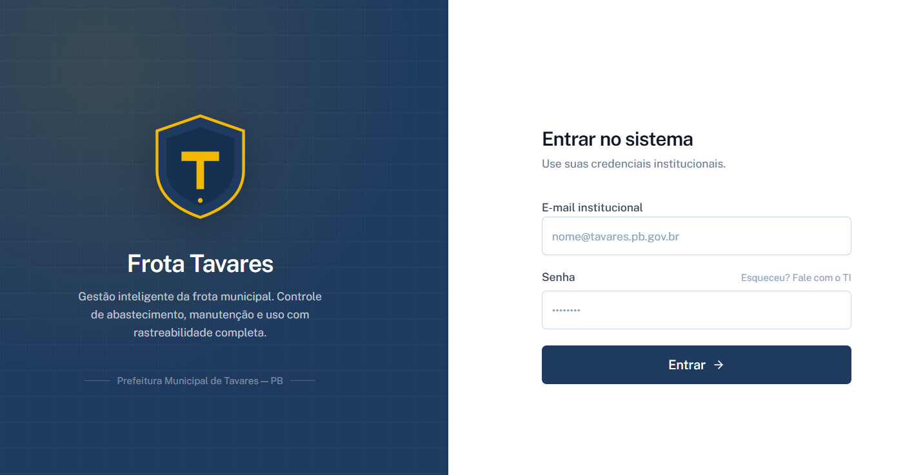

Engenharia que sustenta operações.
Suporte N2/N3, coordenação de TI, análise de causa raiz e continuidade de sistemas críticos.
+5 anos em tecnologiaITIL · RCA · SLA
Suporte N2/N3, coordenação de TI, análise de causa raiz e continuidade de sistemas críticos.
Indicadores, fluxos operacionais, atendimento estruturado e governança para decisões rastreáveis.
Landing pages, sites, sistemas web, plataformas SaaS, automações e integrações de IA.
VER O QUE CONSTRUOMARCONY JÚNIOR / MHSSJR
A mesma disciplina usada para manter operações críticas também orienta o desenvolvimento de software.
Sou profissional de TI com atuação em coordenação de equipes, suporte especializado N2/N3, infraestrutura, ITSM e observabilidade. Levo esse repertório para a criação de landing pages, sites e sistemas web orientados à operação real.
Trabalho do levantamento de requisitos e desenho de fluxos à implementação, análise de logs, testes de APIs e acompanhamento de indicadores.
Responsável local pela reimplantação do ERP Wareline, com treinamento de mais de 100 usuários.
Resolução dentro do SLA de 24 horas na operação hospitalar acompanhada.
Indicador de início de atendimento em contexto de 15 a 17 chamados críticos diários.
Estruturação do Service Desk no Jira, gestão de incidentes e acompanhamento da equipe.
* Indicadores históricos da atuação no Hospital Padre Zé, conforme currículo profissional. Não representam promessa de desempenho futuro.
ATUAÇÃO TÉCNICA
Quatro frentes de trabalho, conectadas pelo entendimento da operação e do usuário.
Suporte avançado, investigação de incidentes, monitoramento e continuidade de ambientes corporativos.
Service Desk, fluxos BPMN, gestão de SLA, indicadores, relatórios e análise operacional.
Páginas comerciais, apresentações digitais e interfaces responsivas com animações, usabilidade e foco em conversão.
Aplicações administrativas, PWAs, APIs, bancos de dados, integrações e fluxos com IA aplicada.
PORTFÓLIO TÉCNICO
Interfaces reais dos sistemas desenvolvidos. Novas capturas podem ser adicionadas diretamente à pasta do projeto.

01 / CONTROLE OPERACIONAL01 / GESTÃO PÚBLICA
Abastecimento, verificação fotográfica de hodômetro, check-in/out, horímetro e rastreabilidade de operações conforme a Lei 14.133.
02 / PLATAFORMA SAAS
Fila virtual, agendamentos, lembretes automatizados e isolamento entre clientes com Supabase RLS.
 03 / AUTOMAÇÃO
03 / AUTOMAÇÃO03 / INTELIGÊNCIA DE VAGAS
Coleta automatizada, critérios determinísticos de pontuação e busca semântica para oportunidades profissionais.
04 / OPERAÇÃO LOCAL
Projeto de aplicação local-first para operação em rede LAN, PostgreSQL e arquitetura preparada para impressão ESC/POS.
05 / ANÁLISE FINANCEIRA
Análise de despesas, estoques, fornecedores e informações financeiras para apoio à gestão hospitalar.
As capturas de Frotas, Barbearia e Motor ATS foram fornecidas pelo autor. Os demais projetos receberão imagens reais quando estiverem disponíveis.
LINHA DO TEMPO · MAIS RECENTE PRIMEIRO
Sustentação de serviços, atendimento corporativo, redes e coordenação de operação.
Coordenador de TI / Analista de Infraestrutura
Analista de Suporte / Processos
Analista Assistente de Redes
Analista Assistente III · Suporte N3
CANAL DE CONTATO
Precisa de uma landing page, um site, um sistema ou apoio em TI? Conte o contexto e retornarei por e-mail.
Ao enviar, os dados informados serão encaminhados pelo serviço externo FormSubmit ao e-mail de contato, apenas para responder à sua mensagem.